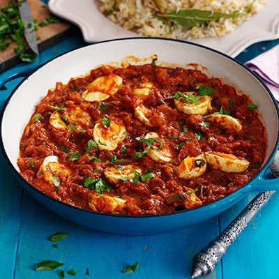

Egg Curry

Description
The Egg curry originated in the humble Awadhi kitchen. According to
20th-century food historian Alan Davidson, it was invented experimentally
by a cook who took a hard-boiled egg, enclosed it in the mutton mince, and
deep fried it
Ingredients
- ¼ cup neutral oil, such as grapeseed or canola
- 2 medium yellow onions, chopped
- 6 garlic cloves, finely chopped
-
1 (2-inch) piece fresh ginger, peeled and finely chopped (about 2
tablespoons)
- 2 small cinnamon sticks
- 6 green cardamom pods
- 1 teaspoon ground coriander
- ½ teaspoon ground turmeric
- ½ teaspoon whole black peppercorns
- 6 Roma tomatoes, finely chopped
- 1 teaspoon kosher salt
- ½ teaspoon garam masala
- 6 to 8 hard-boiled eggs, peeled
- Handful of small, tender fresh cilantro stems
Process lol
-
In a large, heavy skillet, heat the oil over medium. Add the onions
and cook, stirring occasionally, until evenly caramelized and light
brown, 25 to 30 minutes. Stir in the garlic and ginger, and fry,
stirring occasionally, another 4 minutes. Add the cinnamon and
cardamom. When the spices start to toast, after about 2 minutes, stir
in the coriander, turmeric and peppercorns.
-
Add the tomatoes, salt and 1 cup water. Cook, stirring occasionally,
until the mixture thickens and the fat rises to the top, about 15
minutes. Stir in the garam masala and lower the heat. If the sauce
isn’t runny, stir in ½ cup water.
-
Add all but 2 of the eggs and stir gently. Halve the remaining eggs
lengthwise and arrange on top, yolk-side up. Heat until the eggs are
warmed through, then top with cilantro.